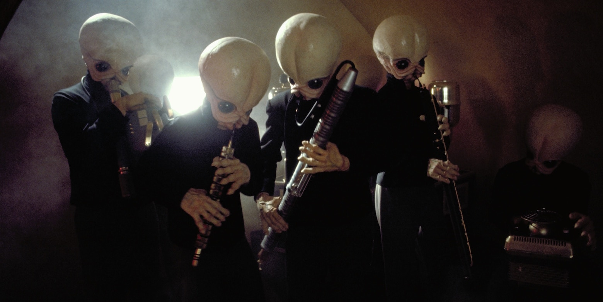

Star Wars
In the Star Wars universe there are many species of aliens, many of whom are smarter and more advanced than humans. There are also species that are much less advanced. Take a look at some of the species below.
Wookies are from the planet Kashyyyk. They are very strong and are comfortable in the cold due to their fur. This is perhaps the most famous Star Wars species thanks to the character Chewbaca. Chewbaca appears in every Star Wars movie and is the sidekick of another famous character, Han Solo.
Gungans live underwater on the planet Naboo. While they prefer to live in water, they can survive and live on land as well. This is another well known race within the franchise thanks to Jar Jar Binks. Jar Jar fought in the Invasion of Naboo in the fourth movie, The Phantom Menace. He went on to be a government representative for his people.
The Togruta race is seen in almost every Star Wars film. Aside from their long head tails, Togruta are not so different from Humans. They have been shown in various roles across the franchise, some even being Jedi, such as Ahsoka Tano. Ahsoka was a main character in the animated series, Star Wars The Clone Wars, and was the Padawan of Anakin Skywalker, also known as Darth Vader.
Ewoks live on the Moon, Endor. These furry bear-like aliens live in the forest and build treehouses. While cute, they are devious and crafty creatures, capable of building traps and weapons. They played a prominent role in the movie Return of the Jedi. They are also the center of one of the most heated Star Wars debates. Many fans dislike Ewoks while others adore them. What do you make of them?

Bith come from the planet Bith and are peaceful creatures, often working as musicians or engineers. Bith are rarely seen in the Star Wars films, yet they are one of the most recognizable aliens from the series. They are well known because of the iconic music they play during the Catina scence in A New Hope.
In Star Wars, Aliens are not something mysterious or frightening to humans. In fact, it is the complete opposite. Humans and Aliens formed an intergalactic civilization that remained peaceful for centuries. It was not until the events of Star Wars that the galaxy went into war, hence the name. In every film, different alien races are shown on the same spaceship and planet as each other. Furthermore, a variety of alien races are seen in the same cities, establishments, and homes together. The planet Coruscant was developed so much by humans and aliens that the entirety of the surface is covered by a city. Rather than depict aliens as the “great unknown” or in a horror aspect, Star Wars illustrates a world where space travel and aliens are the norm.